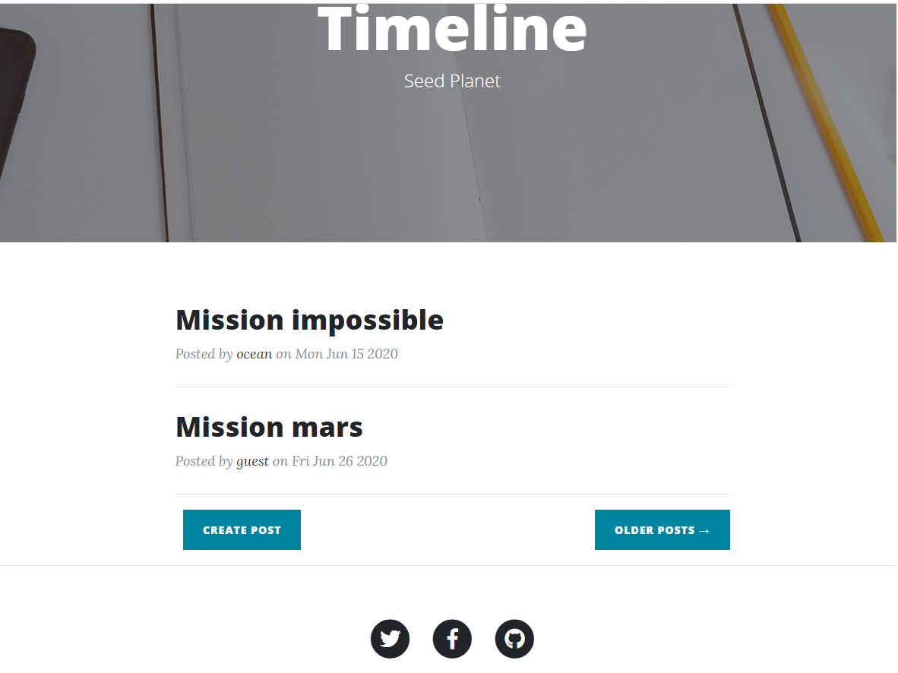

BUNDLEVERSE MANUAL

INCOMPLETE DRAFT: PLS, DO NOT USE
Hobart, June 2020, Last updated December 2020
INTRODUCTION
1.1 Bundleverse
Bundleverse app is a self-improvement web application. It builds on the concept of Bundleverse defined as a collection of Bundles.
1.2 Bundle
A Bundle is a collection of properties which define any item residing in Bundleverse. Remember a bundle definition of a person – every individual is a collection of properties, such as, for example, physical, biological, social, psychological, spiritual etcetera. Get rid of all these properties and the person is gone. Analogously, in Bundleverse everything is a Bundle of properties.A Bundle is a description of an item - an information, or a knowledge about it. Unlike any information in general (e.g. a theory, a story, a novel), the Bundle provides also instructions to follow in order to recover features characteristic of the corresponding entity. In other words, Bundles have more in common with user-manuals rather than fiction-stories. They tell us how to create, operate and maintain (or evolve) something.
Anyone in Bundleverse can design a new Bundle from scratch. Whether that new Bundle will underpin a new particular item (ie something really real, referred to as an instance of the Bundle) or it will remain just an abstract theoretical construct, is to be seeing through practice. Instantiated Bundles reveal themselves through various manifestations – an image, a function, a taste, a smell, experience etc. For many Bundles people are hardwired with the right set of receptors to perceive these manifestations. In special cases the observer will have to have a special training or education to be able to perceive that Bundle.
In general, Bundles can represent anything, but Bundleverse handles predominantly Bundles representing human personalities. Such Bundles are dynamic, evolving entities. They define who we are but also provide a description of our idealised, better self (and also inform us how to get there).
To become a better person, we design some rules and instructions to follow. However, these rules and instructions may not always work for us – i want to lose weight, but cannot refuse a slice of the cake, someone wants to wake up early, but sleeps in, our goals could be misleading, our passions and feelings may bend our reasons. To figure out which strategies work best for us and what kind of goals we really want to achieve, we can iterate and refine our practices through the succession of short-term missions. At the start of every mission, we analyse outcomes from the previous mission, and refine our goals and strategies to succeed in the following missions. After a number of iterations, we are likely to have a better understanding of what we really want to achieve and how to get there.
Note that missions do not have to focus exclusively on ourselves. The goal of the mission could be, for example, the well-being of another person or a group of people we care about.
1.5 Missions
A mission is a short-term iterative practice aiming at either self-improvement or care for others. Bundleverse provides a number of prebuilt missions readily available for the user upon a registration. Each of these missions can be customised further to fit requirements of a particular person.Example of missions
Default This mission is to remind yourself that life is good and you are cool.
LoveMyMum The goal of this simple mission is to make sure you smile to your mum, kiss her and give her a hug al least once a day.
Tracker. Grandpa complaining that changing weather is causing him to have headaches. Bundleverse provides weather APIs to cross-correlate environmental indicators with the manual records of grandpa's state.
Explorer. The goal of this mission is to better understand your Self. The corresponding Bundle is intended as a comprehensive description of the human nature (whatever the definition). The default, prefabricated version includes environmental, bio-physical, psychological, intellectual, social, spiritual, and transcendental dimensions. Some of these dimensions are delivered automatically via api, others require your manual input. After several weeks you may start seeing patterns and correlations. Refine and iterate.
Karma. This mission builds on an Eightfold Path to Perfection (Buddhist teaching). The goal is to evolve your self from the lower planes of the reality populated by the low-level life forms (golems and insects) to the higher realms populated by humans and gods.
Psycho. According to positive psychology (Peterson and Seligman, 2004), six general categories of virtues are common across many different cultures. The goal of this mission is to track your positioning in this system of coordinates.
Peterson, C., and Seligman, M. E. P. 2004. Character strengths and virtues. A handbook and classification. New York, Oxford University Press and Washington, DC - American Psychological Association.
Bundleverse provides a few basic visualisation tools to understand your data accumulated over the cource of the mission (see the View section below). Besides that it provides qulitative means of tracking your progress through the mission (see Manifestations section below).
2. Navigation
2.1 Registration
To design and run missions, you must be registered with Bundleverse https:/bundleverse.com2.2 Workflow

Design page. Having a particular mission selected, go to the “Design” page to create a Bundle template for that mission.
Log page. Once you are happy with your Bundle template, save it and go to the “Log” page to fill in this new Bundle with data.
The “View” page is to visualise and better understand your data.
The “Blog” is to record anything that does not fit into the Bundle format (NOT IMPLEMENTED YET).
2.3 Mission
Bundleverse provides a number of pre-built, default missions, readily available upon a registration. The user can also create his own new mission. To create a new mission, enter a new name into the current mission table, and click on the “LAUNCH” button.To download data for this mission on your local computer, click “DOWNLOAD” button on "Mission" page. This will download a zip file to your machine. Unzip it and look into "Features.ts" ASCI file. The data in this file is organised in columns with headers. The first column is time, the rest are features of your Bundle. Do whatever you like with this data (e.g. visualise, feed to Neural Network, combine with other data, sell it etc.).
To delete this mission, click “DELETE” button. This will erase from the server all data accumulated over the course of this mission. If you intend to keep this data on your local PC, make sure you download this mission first before deleting it.
To create a new missions stack, click on "SHOW ALL", select a subset of manifesations and save it. This will land you back to the "Mission" page. Click on "Launch" to save this mission.
Your progress through the mission progress is shown on the plot on the "Mission" page. It is also illustrated through the changing opacity of the manifestation stack under this plot. THe more active your are, the more higher on the stack you sit.
2.4 Design
To display a Bundle for the current mission, go to the “Design” page.To create a new Bundle for a new mission from scratch, again, go to the “Design” page.
A Bundle is a collection of tables. Each table represents a particular property (e.g physical, biological, social etc). Each table describes a collection of features assigned to that property (e.g. weight, diet, exercise etc.)
Note that saving a new bundle-template deletes all the earlier records and starts this mission again.

Feature, units, min, max, target, type, apiFile, and longName.
- Feature cell shows a feature name (must be alphanumeric)
- Units must not exceed 10 characters
- Min is the minimum value of the feature (must be numeric). Set to 0 for a radio button.
- Max is the maxim values of the feature (must be numeric). Set to 1 for the radio button.
- Target is the desired target value to be achieved during the mission (must lie within the min-max range).
-
Type is either “text”, “radio” or “api”.
- “text” is a default type and indicates input text area
- “radio” is for a checkbox, and
- “api” is for an api input (to be provisioned by the admin)
- apiFile – is a name of the json file holding api data (admin access only). The data are to be generated by api script (to be written by admin, and called regularly to get new data).
- longName is the name of the feature as shown in the api json file (admin access only).
2.5 Log
The “Log” page is where you enter your data on a regular basis (e.g daily) over the course of the mission.Some of these fields will be filled by api. Others will require your manual input.
“SAVE” button lets you to accumulate your records over the course of the day (or several days) and then submit all these data at once (as a single entry at the submission time) by clicking “SUBMIT” button.

2.6 View
The View page shows a spider-plot summary of your records (you need to save the Log data first in order to view this plot). Red color shows your targets, blue is the latest recorded value and yellow is the mean value over the course of the mission. All values are normalised to vary from 0 to 100%, corresponding to min and max values, respectively, as indicated in the design tables. The navigation circle in the top-right is to switch between targets, last records, and mean values on the spider-plot.
Curves. The Curves button redirects to the page with time-series of the recorded data. The data are normalised to vary between min and max as indicated in the design tables. The dash line represents the target values.
Correlations. The Correlcharts button redirects to the page with correlations between between your records.

2.7 Manifestations
Time series and correlations help you to monitor and understand your missions. Apart from that, Bundleverse provides a 3D visual representation of your progress through the mission. You can pile up these 3D representations (called manifestations) on top of each other into a stack to climb up during the mission.Bundleverse provides a range of manifestations to select from and build your own stack to climb up (if you feel so).

3. Legal
3.1 Disclaimer
We accept no responsibility for and exclude all liability in connection with browsing bundleverse.com, use of information or downloading any materials from it, including but not limited to any liability for errors, inaccuracies, omissions, or misleading or defamatory statements.The information provided by us on bundleverse.com is for general informational purposes only. We make no representation or warranty of any kind, express or implied, regarding the accuracy, adequacy, validity, reliability, availability or completeness of any information on the Site.
3.2 Terms of use
When using bundleverse.com you shall not post or send to or from this Website any material for which you have not obtained all necessary consents, is discriminatory, obscene, pornographic, defamatory, liable to incite racial hatred, in breach of confidentiality or privacy, which may cause annoyance or inconvenience to others, which encourages or constitutes conduct that would be deemed a criminal offence, give rise to a civil liability, or otherwise is contrary to the law in the Australia.3.3 Private data ownership
Any time users can download their records collected in Bundleverse and then delete the original copy on the server. Having these records downloaded and erased on a regular basis (e.g. after every mission), ensures that the remote server always holds only a minor fraction of these records. The total collection belongs to the owner of the data. It is up to this owner of the data to either share this data with others or keep it private to himself.Acknowledgements
- HDRI HAVEN
- "Bull Low Poly" by VARRRG is licensed under Standard. https://skfb.ly/6yNFq To view a copy of this license, visit https://sketchfab.com/licenses. Bull
- Low poly pig by Nicolas Alvarado Pig
- "Margarita flower bush" by Maf'j Alvarez is licensed under Creative Commons Attribution. https://skfb.ly/68CKM To view a copy of this license, visit http://creativecommons.org/licenses/by/4.0/.
- Jeremie Louvetz (tiger, moose) Tiger Moose
- m.altay (elk) Elk
- megaudon (pig) Pig
- Zafflex (low-poly longhorn, low-poly goat) Longhorn Goat
- Didier Hannoir (low-poly green cow) Green Cow
- "cow" by pixelbutterfly is licensed under Creative Commons Attribution. https://skfb.ly/ZNH9 To view a copy of this license, visit http://creativecommons.org/licenses/by/4.0/. Cow
- low poly fox by AlienDev Fox
- Lilion by Lary Lilion
- Wooden Buddha statuette by Andrea.noterstefano Buddha
- Low poly panther by Opekunov Panther
- Low poly cat by Oleg Shuldyakov Cat
- "Cat" by Jeneko is licensed under Creative Commons Attribution. https://skfb.ly/6G6LX To view a copy of this license, visit http://creativecommons.org/licenses/by/4.0/. Cat
-
"Minion model" by Mary Shan is licensed under Creative Commons Attribution. https://skfb.ly/GKVt To view a copy of this
license, visit http://creativecommons.org/licenses/by/4.0/.
Minion
AppendixA: Interpretations
According to Storied Multiverse , any item in in this world (or in any other possible world), has been designed, instantiated, and maintained by a human kind through the Instantiated Storied Object Machinery (ISOM). According to ISOM, to create a new entity, one has to provide a more or less coherent description of that entity, including the description of features characteristic of it, and also define reproducible practices delivering these features. Having all these ingredients cooked up, one runs these practices to instantiate that entity. If features characteristic of that entity, are indeed delivered through reproducible practices then whatever the description, it must be referring to the real entity.
This schema is applicable to almost anything. The key point is to have a plausible description of something, and an outline of practices promising to deliver features characteristic of that something. These promises are then tested through practices which either instantiate it (proving it to be real), or vice versa, fail to instantiate it (thus proving it to be an abstract, hypothetical construct).
Bundleverse provides an infrastructure particularly suitable for implementing this schema. The structure of Bundles is flexible enough to accommodate a relatively comprehensive descriptions. Targets built into Bundles and logging procedures are to facilitate practices. ...
Appendix B: Blogging (NOT IMPLEMENTED)
You can create and edit your own blog-posts. You can read posts by others but cannot edit them. All registered users can read your posts, but they cannot edit or delete them (except the admin user, who can edit and delete any blogpost).
The blog editor is a based on tinyMCE plugin. No custom features included.

Appendix C: SkyBox multiplayer (NOT IMPLEMENTED)
SkyBox provides a 3D representation of your mission. Is is built with threejs.org on top of the 3D multiplayer game from the online course material.Still in early development stage.

Appendix D: Shared mode (NOT IMPLEMENTED)
Having a mission established, you can run it in a private mode, or in a shared mode, or a compatitive mode. In a private mode you care only about youself. In a shared mode you share your progress with others. In a compatitive mode you compete with others.By default a mission is private (as indicated in the bottom right corner of the mission table). In a private mode you own your data and you are the only person running this mission and responsible for the progress made through this mission. Other people may run a mission with the same titile and even the same Bundle, but their mission and progress will be independent from yours.
For a shared mission, you still own your data, but you share the Bundle and the manifestation stack with other people and they can now contribute to the progress you make through the mission. For example, if Bob sets the mission to be shared, and Jane then joins this mission (by launching a shared mission with the same title), then Bob and Jain run the same mission and they share progress. Every time Jane logs to this mission, points are added to Bob's mission too (by incrementing his progress). And vice verse, every time Bob logs to the mission, both his and Jane's progress gets incremented. In a shared mission, when Bob and Jane log to the Skybox, they both share the same manifestation in the Skybox (e.g. same "cube"). But the data, again, remain private - Jane owns her data, and Bon owns his records. Only the indicators of the progress are shared.
Finally, in a compatittive mode, you share your Bundle and manifestation stack with others, but keep you data and progress private.
Appendix E: Fitness api (NOT IMPLEMENTED)
Back to storiedmultiverse